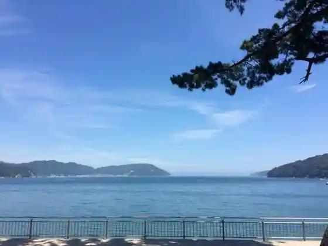
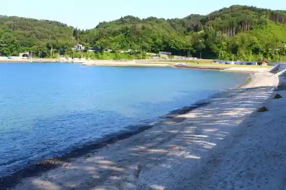
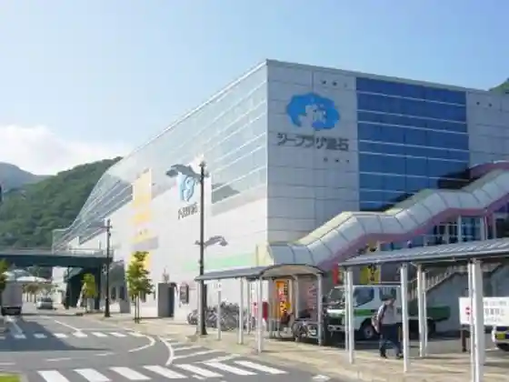

Ne Hama Kaigan Kanko Shisetsu Oto Campground (Ne Hama Shiisaido)
Kamaishi, Iwate · 0193-27-5455 · Official / source link
Ne Hama Beach
Kamaishi, Iwate · 0193-27-8421 · Official / source link

Ne Hama Coast
Kamaishi, Iwate · 0193-27-8421 · Official / source link

Kamaishi Bussan Center (Shii Plaza Kamaishi)
Kamaishi, Iwate · 0193-31-1177 · Official / source link

Kaiho Shi
Kamaishi, Iwate · 0193-22-0629 · Official / source link
Kamaishi Ramen
Kamaishi, Iwate · 0193-22-5835 · Official / source link
Ekimae Hashigami City Ba San Fisshu Kamaishi
Kamaishi, Iwate · 0193-31-3668 · Official / source link
Roadside Station (Kamaishi Sennin Toge)
Kamaishi, Iwate · 0193-27-8530 · Official / source link
Koshi Kaki
Kamaishi, Iwate · 0193-22-2111 · Official / source link
Hamachidori
Kamaishi, Iwate · 0193-23-5613 · Official / source link
U no Sumai Tomosu
Kamaishi, Iwate · 0193-27-5666 · Official / source link
Uogashi Terasu
Kamaishi, Iwate · 0193-27-5566 · Official / source link
Miffiikafe Kamaishi
Kamaishi, Iwate · 0193-55-6707 · Official / source link
Hashino Tekko Yama Infomeshon Center
Kamaishi, Iwate · 0193-54-5250 · Official / source link
Sanriku O no Ya Nizakana Yakizakana
Kamaishi, Iwate · 0193-23-4675 · Official / source link
Sosaku Noka Kosumosu
Kamaishi, Iwate · 0193-27-3366 · Official / source link
Sennin Hi Mizu
Kamaishi, Iwate · 0193-59-2221 · Official / source link
Kyu Kamaishi Kozan Jimusho
Kamaishi, Iwate · 0193-55-5521 · Official / source link
Kiseki no Ishi
Kamaishi, Iwate · 0193-22-0724 · Official / source link
Kamaishi Wan
Kamaishi, Iwate · 0193-22-2111 · Official / source link
Ho Kan Shrine
Kamaishi, Iwate · 0193-22-8835 · Official / source link
Wa Yama Highlands
Kamaishi, Iwate · 0193-57-2155 · Official / source link
Naka Village Hangan Do
Kamaishi, Iwate · 0193-22-8835 · Official / source link
Sennen Forest
Kamaishi, Iwate · 0193-27-8427 · Official / source link
Hashino Donguri Plaza
Kamaishi, Iwate · 0193-57-2650 · Official / source link
Oshima Takato
Kamaishi, Iwate · 0193-22-8835 · Official / source link
Hashino Tekko Yama
Kamaishi, Iwate · 0193-22-8846 · Official / source link
Kamaishi Local History Museum
Kamaishi, Iwate · 0193-22-2046 · Official / source link
Ohira Park
Kamaishi, Iwate · 0193-22-2111 · Official / source link
Ozaki Peninsula
Kamaishi, Iwate · 0193-27-8421 · Official / source link
Ohako Saki
Kamaishi, Iwate · 0193-27-8421 · Official / source link
Bussha Ri to
Kamaishi, Iwate · 0193-24-2125 · Official / source link
San Kan Shima
Kamaishi, Iwate · 0193-27-8421 · Official / source link
Toni Town Hongo no Sakura Namiki
Kamaishi, Iwate · 0193-22-2111 · Official / source link
Goyo Yama
Kamaishi, Iwate · 0193-22-2111 · Official / source link
Sennin Toge
Kamaishi, Iwate · 0193-22-2111 · Official / source link
Kusurishi Park
Kamaishi, Iwate · 0193-22-2111 · Official / source link
Kamaishi Dai Kannon
Kamaishi, Iwate · 0193-24-2125 · Official / source link
Tetsu no Rekishikan
Kamaishi, Iwate · 0193-24-2211 · Official / source link